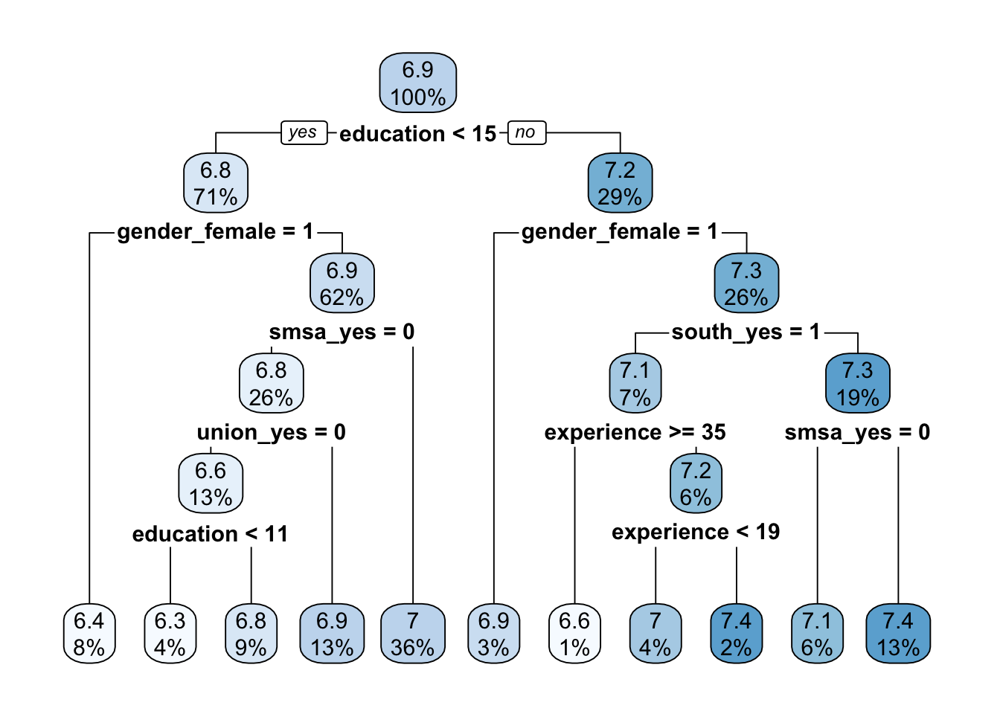

Chapter 2 予測
条件つき母平均 \(E[Y|X]\) の近似関数 \(f(X)\) を推定する
\(E[(E[Y|X]-f(X))^2]\) を削減
データと同じ母集団から新しくランダムサンプリングされた \(Y\) についての優れた予測関数
データ分割を用いたモデル評価も紹介する
Chapter 2.1 : 予測問題の論点を紹介
Chapter 2.3 : データ分割
Chapter 2.4 : 線形モデルをOLS及び罰則付き回帰(LASSO, Ridge)で推定する手法を紹介
Chapter 2.5 : 予測木モデル、及びモデル平均加法(Bagging, Random Forest)を紹介
2.1 問題設定
事前に定義する損失関数の期待値を最小化するような、予測関数\(f(X)\)の推定を目指す。
- 本ページではMean squared error(MSE)を損失関数として用いるケースを紹介する。所与の\(f(X)\)、母分布に従う確率変数\(Y,X\)についてMSEは以下のように定義される。
\[MSE = E_{X,Y}[(Y_i-f(X_i))^2]\]
- 一般にMSEは以下のように書き換えられる。
\[MSE = \underbrace{E_{X,Y}[(Y_i-\bar{Y}(X_i))^2]}_{Irreducible\ error}+\underbrace{E_{X,Y}[(\bar{Y}(X_i)-f(X_i))^2]}_{Reducible\ error}\] ただし\(\bar{Y}(X_i)=E[Y_i|X_i]\)。 上記式から以下が確認できる。
最善の予測関数 \(\iff\) Reducible error \(=0\) \(\iff\) 条件付き母平均\(\bar{Y}(X_i)\)
最善の予測関数のもとでも削減不可能なエラー(Irreducible error)が存在
予測関数の推定 \(=\) Reducible errorの削減を要求 \(=\) 条件付き母平均との乖離(MSE)の削減を要求
2.1.1 Bias-Variance tradeoff
実際の\(f(X_i)\)はランダムサンプリングされたデータから推定される。このためデータの入手前の段階では、確率分布を持つ。
- Reducible errorは一般に以下のように書き換えられます。
\[E_{Y,X,f(X)}[(\bar{Y}(X_i)-f(X_i))^2]\]
\[=\underbrace{(E_{Y,X,f(X)}[\bar{Y}(X_i)-\bar{f}(X_i)])^2}_{Bias}+\underbrace{E_{Y,X,f(X)}[(\bar{f}(X_i)-f(X_i))^2]}_{Variance}.\] ただし\(\bar{f}(X_i)=f(X_i)\)。
上記式は推定される予測関数が平均的にどの程度条件付き母平均を近似できているのか(Biasがどの程度小さいのか)だけでなく、予測関数の分布がどの程度散らばっているのか、についても考慮する必要性を示す。
母平均\(\bar Y(X_i)\)が単純な既知の関数形に従い、かつサンプルサイズが大きい場合、OLS推定された\(f(X_i)\)は\(Bias=0\)かつ小さなVarianceを達成する。
社会科学における多くの応用においては、\(\bar Y(X_i)\)は未知かつ複雑であることが予想され、その複雑さに対してサンプルサイズが小さいことが想定される。
このような状況では、深刻なBias-Variance tradeoffに直面する。
少ないパラメータ（短い回帰式、少ないサブサンプル分割）を推定する場合、大きなBiasを持つ
多くのパラメータ（長い回帰式、多いサブサンプル分割）を推定する場合、大きなVarianceを持つ。
Bias-variance tradeoffを分析者が先見的に解決することは一般に困難
- @ref{LASSO} - ?? で紹介するLASSO/Ridge/Random Forestなどの手法は、bias-variance問題をよりデータ主導型かつ現実的な計算時間の手法で解決することを目指す。
2.2 パッケージ & データ
Rによる教師付き学習実装法には、大きく二つの有力な選択肢が存在する
個別の推定法を実装するパッケージ (例：LASSO & Ridge \(=\) glmnet, Random Forest \(=\) ranger) を使用
- dependencyを減らすことができ、パッケージの更新にも迅速に対応できる
個別パッケージで実装される手法を”共通”の文法で使用するメタパッケージ(例： caret, mlr3, tidymodels, SuerLeaner)を使用
- 初学者が色々な手法を試すことが容易
本ページでは、SuperLearnerの利用を前提にしている
他のメタパッケージに比べて”自由度”が低いが、コーディングに慣れていない読者にとっても比較的用意に使える（かも。。。）
後述するStacking法の実装を主目的としており、母集団への先見的知見が少ない社会科学において実用的
利用するパッケージ
library(tidyverse)
library(AER)
library(SuperLearner) # 機械学習を実装するメタパッケージ
library(rpart.plot) # 予測木の可視化
library(recipes)データ
- 元データを結果変数、予測変数データに分割する必要がある
data("PSID1982")
Y <- PSID1982$wage |> log() # 結果変数
X <- recipe(~ experience + education + industry + south + smsa + married + union + ethnicity + gender,
PSID1982) |>
step_other(all_nominal_predictors(),
other = "others") |>
step_unknown(all_nominal_predictors()) |>
step_indicate_na(all_numeric_predictors()) |>
step_impute_median(all_numeric_predictors()) |>
step_dummy(all_nominal_predictors()) |>
step_zv(all_numeric_predictors()) |>
prep() |>
bake(PSID1982)
set.seed(123)2.3 事前準備
- ここでは5個のデータに分割する。
group <- sample(1:5, # 1から5までの数字を発生される
size = length(Y), # サンプルサイズと同数発生される
replace = TRUE) # 同じ数字が発生することを許容する- 第1データをテストデータ、2－5データを訓練データとして使用する
2.4 線形予測モデル
線形予測関数\(f(X)=\beta_0 + \beta_1X_1+...+\beta_LX_L\)を想定
OLS: \(\beta_0,...,\beta_L\)を最小二乗法にて推定
\[\min\sum_i (Y_i-f(X))^2\]
- LASSO推定：線形モデルを以下の最適化問題の解として推定
\[\min\sum_i (Y_i-f(X_i))^2+\underbrace{\lambda\sum_l|\beta_l|}_{Penalty\ term}\]
\(\lambda\) : チューニングパラメタ、Cross-validationを用いて設定可能
Ridge推定：線形モデルを以下の最適化問題の解として推定
\[\min\sum_i (Y_i-f(X_i))^2+\underbrace{\lambda\sum_l(\beta_l)^2}_{Penalty\ term}\]
- \(\lambda\) : チューニングパラメタ、Cross-validationを用いて設定可能
2.4.1 OLS
fit <-
SuperLearner(Y = Y[group != 1],
X = X[group != 1,],
newX = X,
SL.library = c("SL.lm"),
cvControl = list(V = 20L)
) # 推定
coef(fit$fitLibrary$SL.lm_All$object) # 係数値の表示## (Intercept) experience education industry_yes south_yes
## 5.755132262 0.003562848 0.069988183 0.076419213 -0.056988431
## smsa_yes married_yes union_yes ethnicity_afam gender_female
## 0.196762284 0.115028991 0.087181055 -0.201797880 -0.343736336- 元データ全体への予測値の計算
Y.pred <- fit$SL.predict[,1]- テストデータへの適合
mean((Y - Y.pred)[group == 1]^2)## [1] 0.09619175- デフォルトの設定では、訓練データのみを用いた交差検証（10分割）の結果も自動的に計算されている
fit##
## Call:
## SuperLearner(Y = Y[group != 1], X = X[group != 1, ], newX = X, SL.library = c("SL.lm"),
## cvControl = list(V = 20L))
##
##
## Risk Coef
## SL.lm_All 0.1192825 1Risk \(=\) 交差検証法で推定されたMSE
Coef \(=\) 後述するStackingモデルにおけるOLSによる予測値へのweight
2.4.2 LASSO
glmentパッケージ(Friedman et al. 2021)を利用
- glmnetはdata.frameを直接の入力できず、matrix(vector)に変換する必要がある
fit <-
SuperLearner(Y = Y[group != 1],
X = X[group != 1,],
newX = X,
SL.library = c("SL.glmnet")
)
coef(fit$fitLibrary$SL.glmnet_All$object)## 10 x 1 sparse Matrix of class "dgCMatrix"
## s1
## (Intercept) 6.1021592922
## experience 0.0007651499
## education 0.0537787290
## industry_yes 0.0170376309
## south_yes -0.0381726729
## smsa_yes 0.1488379523
## married_yes 0.1026549245
## union_yes 0.0201281810
## ethnicity_afam -0.1145501021
## gender_female -0.3048826476- 元データ全体への予測値の計算
Y.pred <- fit$SL.predict[,1]- テストデータへの適合
mean((Y - Y.pred)[group == 1]^2)## [1] 0.09617926- 交差検証
fit##
## Call:
## SuperLearner(Y = Y[group != 1], X = X[group != 1, ], newX = X, SL.library = c("SL.glmnet"))
##
##
##
## Risk Coef
## SL.glmnet_All 0.1198278 12.4.3 Ridge
learners = create.Learner("SL.glmnet", params = list(alpha = 0)) # glmnetのalphaを0（Ridge推定）に設定
fit <-
SuperLearner(Y = Y[group != 1],
X = X[group != 1,],
newX = X,
SL.library = c(learners$names)
)
coef(fit$fitLibrary$SL.glmnet_1_All$object)## 10 x 1 sparse Matrix of class "dgCMatrix"
## s1
## (Intercept) 6.23601716
## experience 0.00163009
## education 0.04008814
## industry_yes 0.03479081
## south_yes -0.06350106
## smsa_yes 0.13136009
## married_yes 0.12712923
## union_yes 0.03456877
## ethnicity_afam -0.16078323
## gender_female -0.21611678- 元データ全体への予測値の計算
Y.pred <-fit$SL.predict[,1]- テストデータへの適合
mean((Y - Y.pred)[group == 1]^2)## [1] 0.09640949- 交差検証
fit##
## Call:
## SuperLearner(Y = Y[group != 1], X = X[group != 1, ], newX = X, SL.library = c(learners$names))
##
##
##
## Risk Coef
## SL.glmnet_1_All 0.119792 12.5 予測木モデル
2.5.1 Tree
予測木を推定する
推定法は以下の通り
- ある変数\(X\)のある閾値\(\bar X\)において、サンプルを分割する
分割後のサブサンプル平均を暫定的予測値とする
予測値と訓練データにおける結果変数の値の乖離(MSE)を最小にするように、分割に用いる変数と閾値を決定
１回目の分割結果を所与として、２回目の分割を決定。変数と閾値は１回目と同様の基準で決定。
以上を繰り返す
推定された予測木について、pruningを実行
fit <-
SuperLearner(Y = Y[group != 1],
X = X[group != 1,],
newX = X,
SL.library = c("SL.rpartPrune")
)
rpart.plot(fit$fitLibrary$SL.rpartPrune_All$object) # 予測木の可視化
- 元データ全体への予測値の計算
Y.pred <- fit$SL.predict[,1]- テストデータへの適合
mean((Y - Y.pred)[group == 1]^2)## [1] 0.1084955- 交差検証
fit##
## Call:
## SuperLearner(Y = Y[group != 1], X = X[group != 1, ], newX = X, SL.library = c("SL.rpartPrune"))
##
##
##
## Risk Coef
## SL.rpartPrune_All 0.1382216 12.5.2 Random Forest
Random Forestを推定する
多数の予測木を推定し、各予測値の平均値を最終予測値とする
- 平均を取ることで、予測値の分散削減が期待できる
予測木におけるサンプル分割において、ランダムに予測変数の部分集合を選ぶ
部分集合の中から、訓練データへの適合度が最大になるように分割を行う
各予測木の予測値の相関を減らし、平均化による分散削減を促進する
fit <-
SuperLearner(Y = Y[group != 1],
X = X[group != 1,],
newX = X,
SL.library = c("SL.ranger")
)- 元データ全体への予測値の計算
Y.pred <- fit$SL.predict[,1]- テストデータへの適合
mean((Y - Y.pred)[group == 1]^2)## [1] 0.08485928- 交差検証
fit##
## Call:
## SuperLearner(Y = Y[group != 1], X = X[group != 1, ], newX = X, SL.library = c("SL.ranger"))
##
##
##
## Risk Coef
## SL.ranger_All 0.1168173 12.6 Stacking
SuperLearner関数の主目的は、複数の予測モデルを線型結合した予測モデル（Super learner: Van der Laan, Polley, and Hubbard (2007)）の推定
- \(f_k(x)\)をアルゴリズム\(k\) (例：LASSO, Ridge, Random Forest)により推定された予測値とすると、SuperLearnerは以下のように定義される
\[f_{SL}(x)=\beta_1 f_1(x)+...+\beta_K f_{K}(x)\]
ただし, \(\beta_k \in [0,1]\)かつ\(\beta_1+...+\beta_K=1\)
learners = create.Learner("SL.glmnet", params = list(alpha = 0)) # Ridge推定の定義
fit <-
SuperLearner(X = X[group != 1,],
Y = Y[group != 1],
newX = X,
SL.library = c("SL.mean",
"SL.lm",
"SL.glmnet",
"SL.rpartPrune",
"SL.ranger",
learners$names
)
) # モデル推定 & 交差検証
fit##
## Call:
## SuperLearner(Y = Y[group != 1], X = X[group != 1, ], newX = X, SL.library = c("SL.mean",
## "SL.lm", "SL.glmnet", "SL.rpartPrune", "SL.ranger", learners$names))
##
##
## Risk Coef
## SL.mean_All 0.1983490 0.0000000
## SL.lm_All 0.1197758 0.3796438
## SL.glmnet_All 0.1197891 0.0000000
## SL.rpartPrune_All 0.1466757 0.0000000
## SL.ranger_All 0.1164411 0.6203562
## SL.glmnet_1_All 0.1196649 0.0000000Coef \(= \beta_k\)
訓練データ内の交差検証では、glmnetにより実装されたLASSOによる予測値の性能が最もいいことが確認できる
Stackingモデルにおいて、最もweightが大きいのはLASSO、続いてrangerであることが確認できる
Stackingモデルの予測値
Y.pred <- fit$SL.predict[,1]- テストデータへの適合
mean((Y - Y.pred)[group == 1]^2)## [1] 0.0855917